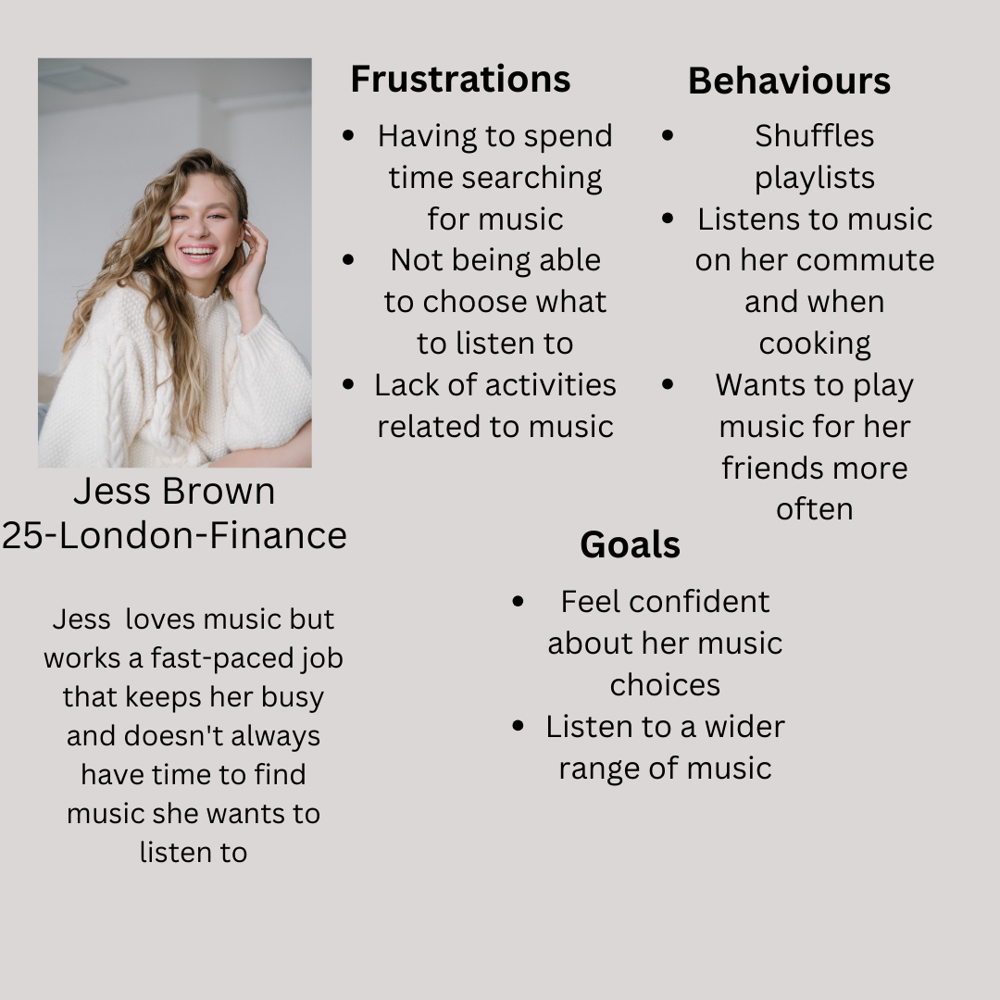
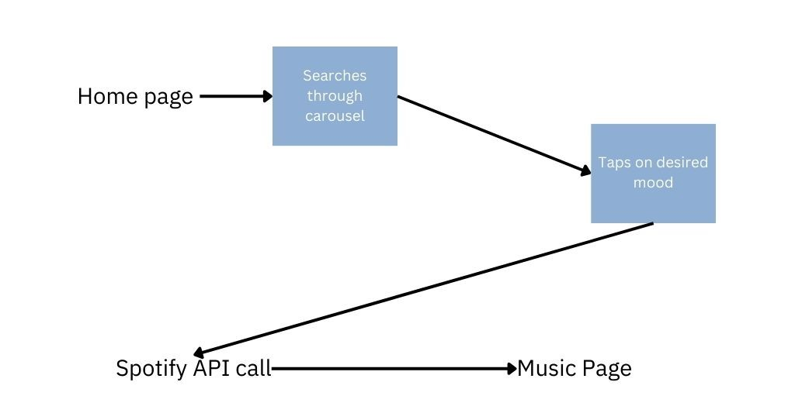
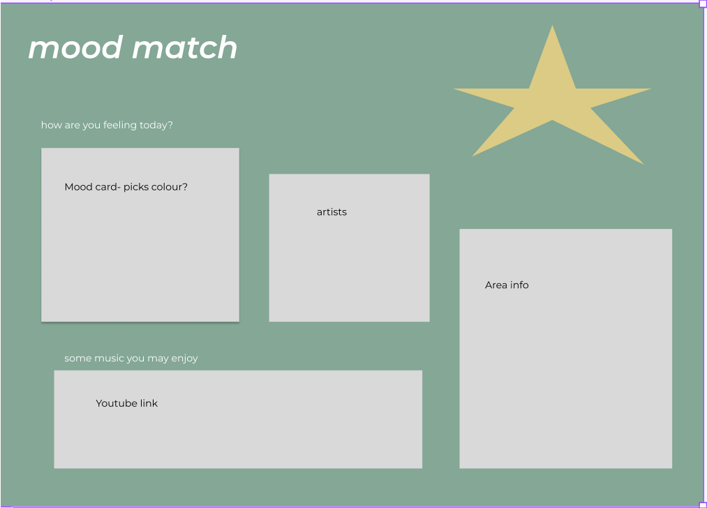
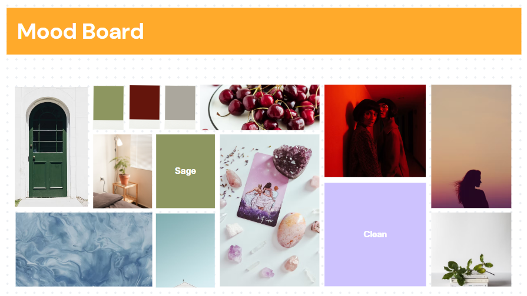

This project was about creating an application that allowed a user to pick from a set of moods and be able to search for songs by clicking this.We also wanted to implement additional features for the app to be more interactive
Tools: Figma, Spotify API , Bands in town API, Bootstrap
See ProjectThe starting point was to do some research to see what issues people were having when it came to picking music to listen to.
Secondary research has shown a challenge in the struggle to curate tailored music to a mood. The findings reveal that individuals possess a variety of music tastes but often struggle to discover new artists. This insight underscores the significance of designing a music app that not only facilitates easy song picking but also provides users with the ability to find concerts for artists they enjoy.
Although personal music curation alreadly exists, people are unhapppy with it and feel it does not offer enough variety and additional features.
To get a deeper understanding of the users' needs I have decided that the best method would be to conduct user interviews to hear about their experiences. This allowed me to ask them follow-up questions to go into more detail about their experiences. For this primary research, I will be interviewing 3 people to get a insight of what their desires and struggles are.
Below are some of the people that I have interviewed along with quotes from an affinity map.
Its hard to find music i want to listen to in the moment
I wish i could access more features from my music to make it a more hollisitc experience
I want to discover more new artists
After interviewing users and arranging their feelings into an affinity map, I decided to connect some themes that were common to the users together to get to the cause of their points.
Users found it hard to self describe thier mood
Users wanted more functionality from thier music
The persona is based on a younger person (18-30) as they are more likely to seek out music on streaming platforms . The mentioned frustrations, goals, and behaviours are based on the interview findings and secondary research , and reflect issues that most consumers of music face
Having created a user persona , i began to thinll of user stories and task flows for common functionalities
After all the research was done and key areas were identified , it was time to create a polished user interface design prototype on Figma.
As the app is targeted at young people , particular those up to date with trends , deciding on a uniform brand was important. This is as that generation has grown up with internet advancements and now values a highly aesthetcially beautiful site more than just a functional one. It had to be pleasing and friendly. Based on research of latest trens (done by scrolling through popular social media platforms and seeing what kind of imagery was being used ) , I collated a vision board
After all the research was done and key areas were identified , it was time to create a polished user interface design prototype on Figma.
After all the research was done and key areas were identified , it was time to create a polished user interface design prototype on Figma.